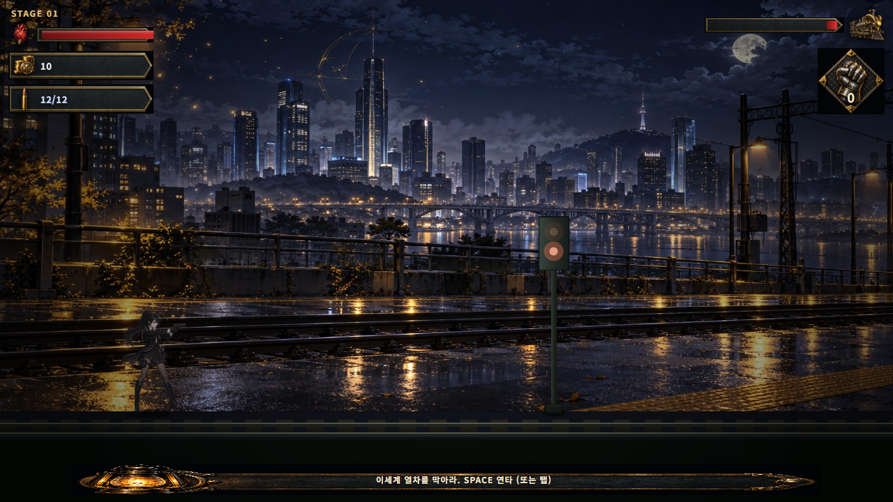
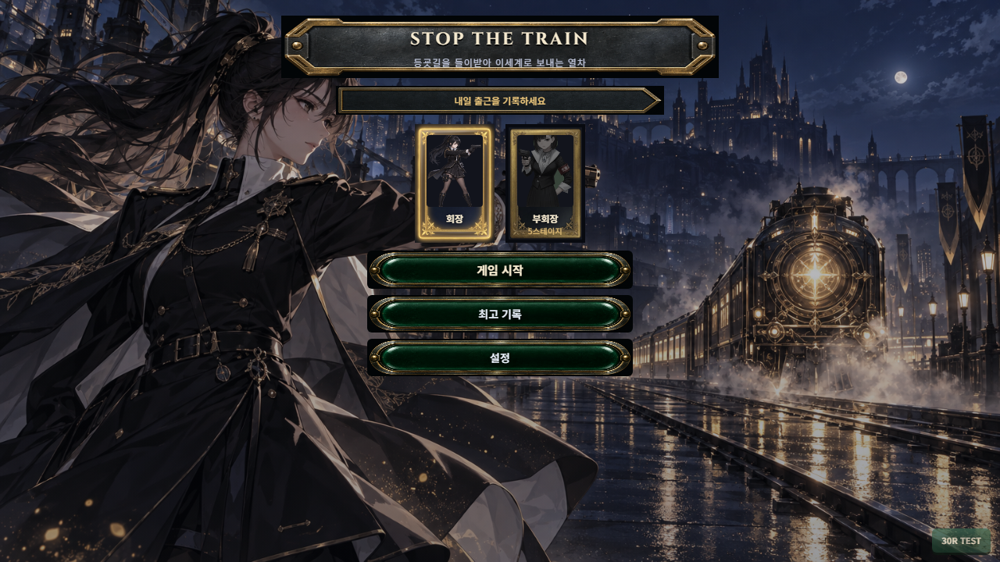
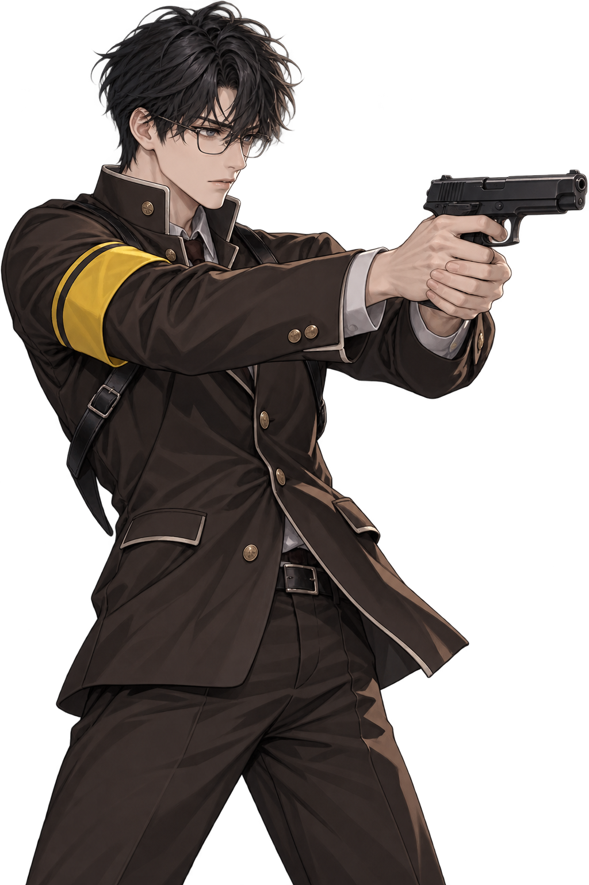
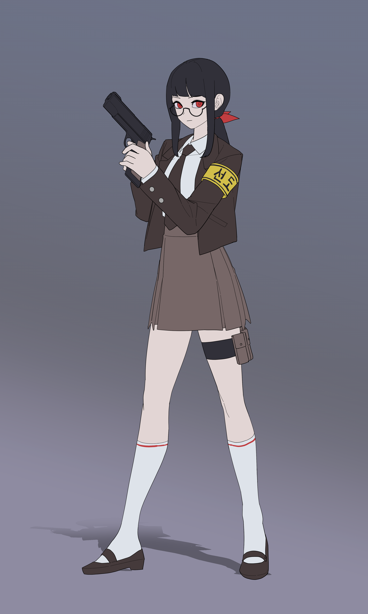
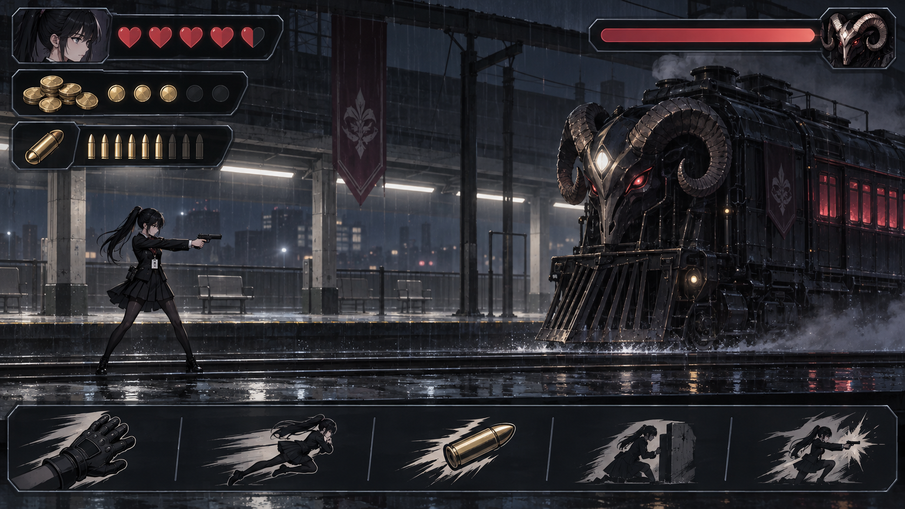
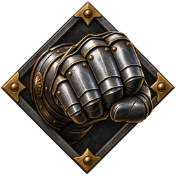
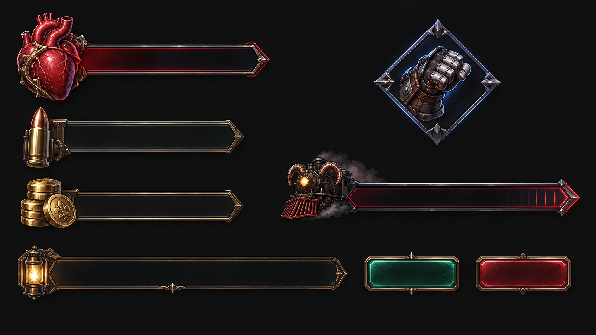
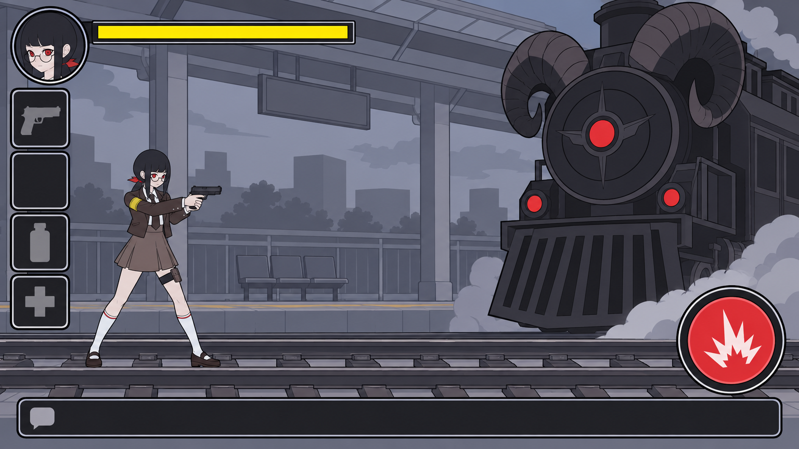
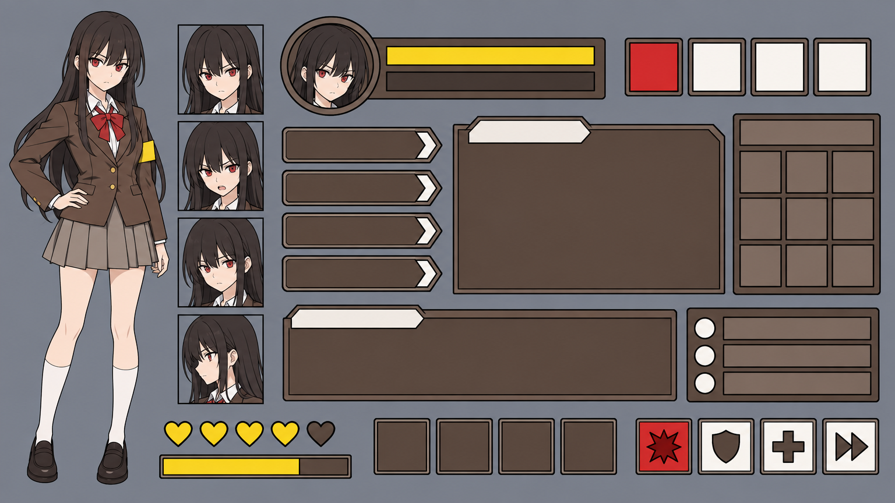

이 문서는 글로만 설명하지 않는다. 지금 있는 화면과 시안으로 읽는다. 가로 모바일 16:9가 기준이다.
1. 한 화면으로 보는 게임
폰을 가로로 든다. 캐릭터는 왼쪽, 열차는 오른쪽. 화면을 두드리면 쏜다.

라이브 전투. 16:9, 왼쪽 회장 · 오른쪽 열차 · HUD는 모서리만.

타이틀. 출근 줄, 회장/부회장, 시작.
비품실. 막은 다음, 다음 열차 전에 산다.
2. 한 판
오늘 출근했는지, 누구로 막을지. 시작을 누른다.
1스테이지에 이세계 개체가 반드시 나온다. 광고에서 보여 준 것과 같아야 한다.
탭할 때마다 샷 소리와 진동. 열차가 몸에 닿으면 오버.
막으면 골드로 산다. 들이받으면 그 판은 끝.
3. 누가 막나

학생회장 — 플레이어. 권총. 자리를 지킨다.

부회장 — 상점 동료. 5스테이지면 플레이어로 해금.

선도부 — 갈색 교복, 노란 완장. 아직 인게임이 아니다.
체육부장은 상점에서 산다. 열차를 몸으로 1초 막는다.
4. 전투 HUD — 채택안 9
일러스트 아이콘. 글자는 판 위에 HTML로 올린다.

사이드뷰 전투 시안. 라이브 HUD의 기준.


키트 시트. 하트·탄피·금화·장갑·열차.
5. 런 밖 — 내일 오게 하는 것
오늘 첫 런에서 출근을 찍는다. 이어지면 스트릭, 골드 보너스(최대 50G). 타이틀 위에 줄로 보여 준다. 하이점수만으로는 내일 안 온다.
5스테이지를 막으면 타이틀에서 부회장을 고를 수 있다. 런 밖의 목표다.
6. 비품실
라이브 상점. 초록이 구매, 빨강이 광고·다음 열차.
| 항목 | 가격 | 하는 일 |
|---|---|---|
| 부회장 | 60G | 옆에서 자동 사격 |
| 매그넘 | 90G | 넉백·데미지 |
| 체육부장 | 60G | 1초 저지 |
| 체육부장 강화 / 재장전 | 30G | 저지·재장전 |
| 광고 스텁 | — | +60G. 승패 스탯은 광고로 안 산다 |
7. 아트 두 갈래
지금은 검은 교복 회장 + 아이콘 HUD로 라이브다. 선도부 플랫 시안은 아직 안 넣었다. 갈아타면 HUD도 아래 키트 중 하나로 맞춘다.

선도부 시안 전투. 같은 가로 사이드뷰.

갈색·노랑·빨강 플랫 라인 키트.
선도부 UI 후보는 완장 / 학생증 / 플랫 라인 / 경고장 / 칠판 / 안경·문방구. 보드에서 13~18.
8. 시작에 성공하는 법
웹 광고형이다. 설치 유도 광고와 첫 판이 다르면 바로 죽는다. 숫자 없이 유저를 사지 않는다.
크리에이티브에 넣는 것은 실제 1스테이지다. 회장이 왼쪽, 열차가 오른쪽, 개체가 내린다. 22스테이지 보스나 상점 풀세트를 광고에 넣지 않는다.
1스테이지 좀비는 필수다. 위협이 없으면 연타할 이유가 없다. 클리어는 짧게, 못 막으면 바로 오버가 보이게.
탭마다 샷과 진동. 무음이면 버튼 연타일 뿐이다. 사운드 켜진 상태에서 첫 판을 돌린다.
첫 클리어 뒤 타이틀에 「내일도 출근」이 보여야 한다. 하이점수 숫자만 있으면 D1이 안 나온다.
스팀 저가와 같이 가면 둘 다 약해진다. 페이지 링크 하나로 광고를 받는다.
설정에 이미 있다: 방문, 1스테이지 시작, 클리어율, D1. 1스테이지 클리어가 안 나오면 광고를 끄고 첫 판을 고친다. D1이 안 나오면 출근 보상을 고친다. 그 다음에만 예산을 넣는다.
소액·짧은 기간만 태운다. 크리에이티브는 라이브 화면을 캡처한다. 시안 일러스트로 광고하지 않는다.
선도부 시안은 captivating하지만, 첫 성공 조건(클리어율·D1)을 검은 회장 빌드로 먼저 본다. 숫자가 나온 뒤에 캐릭터를 바꿀지 정한다.
하지 않는 것
- 스팀과 웹을 동시에 밀기
- 광고로 무적·스테이지 스킵·승패 스탯 판매
- 주인공이 뛰어다니는 액션으로 장르 바꾸기
- 측정 전에 예산을 태우기
라이브 화면은 이 빌드에서 찍었다. 시안 이미지는 선정 전까지 후보다. 가로 16:9가 유일한 플레이 비율이다.